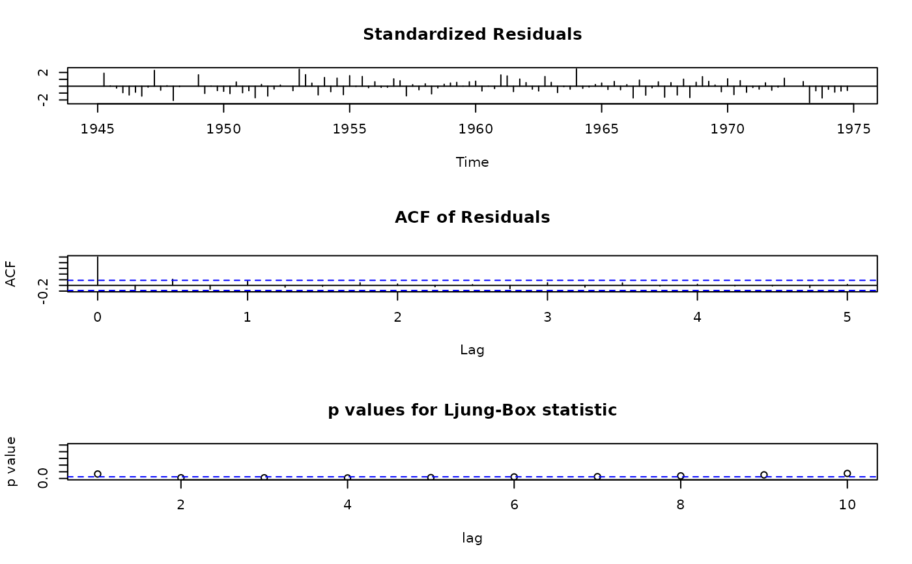

Arima with Ljung-Box
ARIMA.RdFit an ARIMA model and test residuals with the Ljung-Box statistic
Usage
ARIMA(x, order = c(0, 0, 0),
seasonal = list(order = c(0, 0, 0), period = NA),
xreg = NULL, include.mean = TRUE, transform.pars = TRUE,
fixed = NULL, init = NULL, method = c("CSS-ML", "ML", "CSS"),
n.cond, optim.control = list(), kappa = 1e6, Box.test.lag=NULL,
Box.test.df = c("net.lag", "lag"),
type = c("Ljung-Box", "Box-Pierce", "rank"))Arguments
- x
a univariate time series
- order
A specification of the non-seasonal part of the ARIMA model: the three components (p, d, q) are the AR order, the degree of differencing, and the MA order.
- seasonal
A specification of the seasonal part of the ARIMA model, plus the period (which defaults to 'frequency(x)'). This should be a list with components 'order' and 'period', but a specification of just a numeric vector of length 3 will be turned into a suitable list with the specification as the 'order'.
- xreg
Optionally, a vector or matrix of external regressors, which must have the same number of rows as 'x'.
- include.mean
Should the ARMA model include a mean/intercept term? The default is 'TRUE' for undifferenced series, and it is ignored for ARIMA models with differencing.
- transform.pars
Logical. If true, the AR parameters are transformed to ensure that they remain in the region of stationarity. Not used for 'method = "CSS"'.
- fixed
optional numeric vector of the same length as the total number of parameters. If supplied, only 'NA' entries in 'fixed' will be varied. 'transform.pars = TRUE' will be overridden (with a warning) if any AR parameters are fixed. It may be wise to set 'transform.pars = FALSE' when fixing MA parameters, especially near non-invertibility.
- init
optional numeric vector of initial parameter values. Missing values will be filled in, by zeroes except for regression coefficients. Values already specified in 'fixed' will be ignored.
- method
Fitting method: maximum likelihood or minimize conditional sum-of-squares. The default (unless there are missing values) is to use conditional-sum-of-squares to find starting values, then maximum likelihood.
- n.cond
Only used if fitting by conditional-sum-of-squares: the number of initial observations to ignore. It will be ignored if less than the maximum lag of an AR term.
- optim.control
List of control parameters for 'optim'.
- kappa
the prior variance (as a multiple of the innovations variance) for the past observations in a differenced model. Do not reduce this.
- Box.test.lag
the Box.test statistic will be based on 'Box.test.lag' autocorrelation coefficients of the whitened residuals. The default is the maximum of the following:
round(log(sum(!is.na(x)))), recommended by Tsay (p. 27).One more than the number of parameters estimated, not counting any 'intercept' in the model.
- Box.test.df
numeric or character variable indicating the degrees of freedom for the ch-square approximation to the distribution of the Box.test statistic. The default 'net.lag' is 'Box.test.lag' minus the number of relevant parameters estimated. The primary alternative 'lag' is the number of lags included in the computation of the statistic.
A positive number can also be provided.
- type
which Box.test 'type' should be used? Partial matching is used.
The 'rank' alternative computes 'Ljung-Box' on rank(x); see Burns (2002) and references therein.
NOTE: The default 'Ljung-Box' type generally seems to be more accurate and popular than the earlier 'Box-Pierce', which is however the default for 'Box.test'.
Details
1. Fit the desired model using 'arima'.
2. Compute the desired number of lags for Box.test
3. Apply 'AutocorTest' to the whitened residuals.
NOTE: Some software does not adjust the degrees of freedom for the number of parameters estimated. Tsay (2005) and Enders (2004) do. The need to adjust the degrees of freedom discussed by Brockwell and Davis (1990), who provide a proof describing the circumstances under which this is appropriate.
This is, however, an asymptotic result, and it would help to have simulation studies of the distribution of the Ljung-Box statistic, estimating degrees of freedom and evaluating goodness of fit. Burns recommends a rank version of the Ljung-Box test, but does not estimate degrees of freedom. If you have done such a simulation or know of a reference describing such, would you please notify the maintainer of this package?
4. If 'xreg' is supplied, compute r.squared.
Value
an 'arima' object with an additional 'Box.test' component and if 'xreg' is not null, an 'r.squared' component.
NOTE: The 'Box.test' help page in R 2.6.1 says, 'Missing values are not handled.' However, if 'x' contains NAs, 'ARIMA' still returns a numeric answer that seems plausible, at least in some examples. Therefore, either this comment on the help page is wrong (or obsolete) or the answer can not be trusted with NAs.
References
Brockwell and Davis (1990) Time Series: Theory and Methods, 2nd Edition (Springer, page 310).
Walter Enders (2004) Applied Econometric Time Series (Wiley, pp. 68-69)
Greta Ljung and George E. P. Box (1978) 'On a measure of lack of fit in time series models', Biometrika, vol. 66, pp. 67-72.
Ruey Tsay (2005) Analysis of Financial Time Series, 2nd ed. (Wiley, ch. 2)
Patrick Burns (2002) 'Robustness of the Ljung-Box Test and its Rank Equivalent', https://www.burns-stat.com/pages/Working/ljungbox.pdf, accessed 2007.12.29.
Author
Spencer Graves for the ARIMA{FinTS} wrapper for
arima, written by the R Core Team, and
Box.test, written by A. Trapletti. John Frain
provided the citation to a proof in Brockwell and Davis (1990) that
the degrees of freedom for the approximating chi-square distribution
of the Ljung-Box statistic should be adjusted for the number of
parameters estimated. Michal Miklovic provided the citation to Enders
(2004).
Examples
##
## Examples from 'arima'
##
lh100 <- ARIMA(lh, order = c(1,0,0))
lh100$Box.test
#>
#> Box-Ljung test (lag = 4)
#>
#> data: fit$resid
#> X-squared = 5.1851, df = 3, p-value = 0.1587
#>
# df = 3 = round(log(lh)) - 1
# 2 parameters are estimated, but 1 is 'intercept',
# so it doesn't count in the 'df' computation
lh500 <- ARIMA(lh, order = c(5,0,0))
lh500$Box.test
#>
#> Box-Ljung test (lag = 6)
#>
#> data: fit$resid
#> X-squared = 0.48925, df = 1, p-value = 0.4843
#>
# round(log(length(lh))) = 4
# Default Box.test.lag = min(5+1, 4) = 6,
# so df = 1; without the min(5+1, ...), it would be -1.
lh500$Box.test$method # lag = 6
#> [1] "Box-Ljung test (lag = 6)"
lh101 <- ARIMA(lh, order = c(1,0,1))
lh101$Box.test
#>
#> Box-Ljung test (lag = 4)
#>
#> data: fit$resid
#> X-squared = 3.5191, df = 2, p-value = 0.1721
#>
# works with mixed ARMA
USAccD011 <- ARIMA(USAccDeaths, order = c(0,1,1),
seasonal = list(order=c(0,1,1)))
USAccD011$Box.test
#>
#> Box-Ljung test (lag = 4)
#>
#> data: fit$resid
#> X-squared = 2.7568, df = 2, p-value = 0.252
#>
# df = round(log(length(USAccDeaths))) - 2:
# correct 'df' with nonstationary 'seasonal' as well
LakeH200 <- ARIMA(LakeHuron, order = c(2,0,0),
xreg = time(LakeHuron)-1920)
LakeH200$Box.test
#>
#> Box-Ljung test (lag = 5)
#>
#> data: fit$resid
#> X-squared = 0.59148, df = 2, p-value = 0.744
#>
# correct 'df' with 'xreg'
LakeH200$r.squared
#> [1] 0.2164241
## presidents contains NAs
## graphs in example(acf) suggest order 1 or 3
require(graphics)
(fit1 <- ARIMA(presidents, c(1, 0, 0)))
#>
#> Call:
#> stats::arima(x = x, order = order, seasonal = seasonal, xreg = xreg, include.mean = include.mean,
#> transform.pars = transform.pars, fixed = fixed, init = init, method = method,
#> n.cond = n.cond, optim.control = optim.control, kappa = kappa)
#>
#> Coefficients:
#> ar1 intercept
#> 0.8242 56.1505
#> s.e. 0.0555 4.6434
#>
#> sigma^2 estimated as 85.47: log likelihood = -416.89, aic = 839.78
fit1$Box.test
#>
#> Box-Ljung test (lag = 5)
#>
#> data: fit$resid
#> X-squared = 12.718, df = 4, p-value = 0.01274
#>
tsdiag(fit1)

##
## Example with multiple 'xreg' variables
##
tLH <- as.numeric(time(LakeHuron)-1920)
tLH2 <- cbind(timeLH.1920 = tLH, time.sq = tLH*tLH)
LakeH200. <- ARIMA(LakeHuron, order=c(2,0,0), xreg=tLH2)
LakeH200.$r.squared
#> [1] 0.3524303